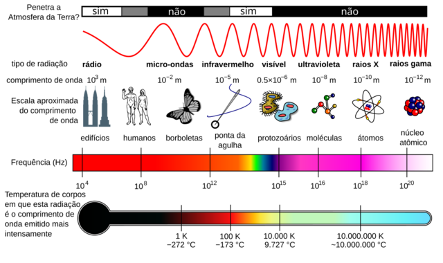
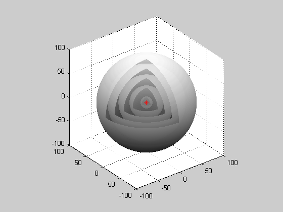

Aula 1: Definição e Classificação das Ondas
Ondulatória
Objetivos
Ao final desta aula, você deverá ser capaz de:
- Definir onda como perturbação que transporta energia.
- Distinguir transporte de energia e transporte de matéria.
- Classificar ondas quanto à natureza: mecânicas ou eletromagnéticas.
- Classificar ondas quanto à direção de vibração: transversais, longitudinais ou mistas.
- Classificar ondas quanto à dimensão de propagação: unidimensionais, bidimensionais ou tridimensionais.
- Reconhecer faixas do espectro eletromagnético e suas aplicações.
- Identificar radiações ionizantes e não ionizantes.
Introdução
Ondas aparecem em muitas situações do cotidiano: no som de uma conversa, na luz que chega do Sol, nas ondas formadas na superfície da água, no sinal de rádio, no Wi-Fi, nas imagens de radiografia e nos tremores produzidos por terremotos. Apesar de parecerem fenômenos muito diferentes, todos envolvem uma ideia comum: uma perturbação se propaga e transporta energia.
Nesta aula, o objetivo principal é organizar essa variedade de fenômenos. Para isso, vamos classificar as ondas por três critérios: a natureza da onda, a direção da vibração e a dimensão da propagação. Essa classificação ajuda a responder perguntas importantes: a onda precisa de um meio material? A vibração ocorre na mesma direção da propagação ou em direção perpendicular? A energia se espalha por uma linha, por uma superfície ou por todo o espaço?
Essa base será usada nas próximas aulas de ondulatória. Antes de estudar grandezas como frequência, período, comprimento de onda, velocidade e fenômenos como reflexão, refração, difração e interferência, é importante reconhecer que nem toda onda é do mesmo tipo. O som no ar, por exemplo, é uma onda mecânica e longitudinal; a luz, no tratamento usual, é uma onda eletromagnética e transversal; ondas na superfície da água combinam movimentos e se espalham em duas dimensões.
Situação-Problema
Quando uma pedra cai na água, vemos ondulações se afastando do ponto de impacto. Uma folha que está na superfície sobe e desce e pode ter pequenos deslocamentos laterais, mas não acompanha a onda por toda a superfície.
Pergunta para pensar: o que se desloca pela água?
Não é a água inteira que viaja com a onda. O que se propaga é a perturbação, transportando energia. Em uma descrição básica, as partículas do meio oscilam em torno de posições próximas das posições iniciais.
O Que é Uma Onda?
Uma onda é uma perturbação que se propaga no espaço, transportando energia sem transportar matéria de forma permanente de um ponto a outro.

Em uma corda, cada ponto da corda sobe e desce, mas a deformação avança. No som no ar, as moléculas vibram localmente em torno de uma posição média, enquanto a energia sonora se espalha pelo ambiente. Na luz, campos elétricos e magnéticos oscilantes se propagam até mesmo no vácuo.
Um pulso é uma perturbação única. Uma onda periódica é uma sequência regular de perturbações produzida por uma fonte que oscila repetidamente.
Classificação Quanto à Natureza
Ondas Mecânicas
Ondas mecânicas precisam de um meio material para se propagar. Não se propagam no vácuo.
Exemplos:
- som no ar;
- ondas em cordas;
- ondas na água;
- ondas sísmicas;
- ondas em molas.

O som é mecânico porque depende das vibrações de um meio material. No ar e na água, ele se propaga por compressões e rarefações; em sólidos, também podem existir ondas sonoras com outros modos de vibração.
Ondas Eletromagnéticas
Ondas eletromagnéticas não precisam de meio material. Elas podem se propagar no vácuo.
Exemplos:
- ondas de rádio;
- micro-ondas;
- infravermelho;
- luz visível;
- ultravioleta;
- raios X;
- raios gama.

No vácuo, todas as ondas eletromagnéticas se propagam com velocidade:
\[ c=3{,}0\cdot 10^8\ \text{m/s} \]
Aplicação: Espectro Eletromagnético
O espectro eletromagnético organiza as ondas eletromagnéticas por frequência, comprimento de onda e energia.

Da menor para a maior frequência, temos aproximadamente:
- ondas de rádio;
- micro-ondas;
- infravermelho;
- luz visível;
- ultravioleta;
- raios X;
- raios gama.
Quanto maior a frequência, maior a energia associada à radiação eletromagnética. Por isso, radiações de alta frequência, como raios X e raios gama, exigem proteção especial.
Radiações Ionizantes e Não Ionizantes
- Radiações não ionizantes
- Não têm energia suficiente para arrancar elétrons dos átomos em condições usuais. Exemplos: ondas de rádio, micro-ondas, infravermelho e luz visível.
- Radiações ionizantes
- Podem arrancar elétrons de átomos e moléculas, causando alterações químicas e biológicas. Exemplos: parte do ultravioleta, raios X e raios gama.
Na prática, a fronteira não é apenas o nome da faixa do espectro. Ela depende da energia dos fótons e do material exposto. Por isso, é mais correto dizer que parte da radiação ultravioleta é ionizante, enquanto raios X e raios gama são tratados como ionizantes em aplicações escolares e médicas.
Essa distinção é importante para entender exames médicos, proteção radiológica, exposição solar e tecnologias de comunicação.
Classificação Quanto à Direção de Vibração
Ondas Transversais
Nas ondas transversais, a vibração ocorre perpendicularmente à direção de propagação.
Exemplos:
- onda em uma corda;
- ondas eletromagnéticas no vácuo ou em situações usuais de propagação.
Ondas Longitudinais
Nas ondas longitudinais, a vibração ocorre paralelamente à direção de propagação. Ocorrem regiões de compressão e rarefação.

Exemplos:
- som no ar;
- pulso longitudinal em uma mola.
Ondas Mistas
Ondas mistas combinam movimentos transversais e longitudinais.

Ondas superficiais na água são um exemplo comum: as partículas podem executar movimentos aproximadamente circulares ou elípticos.
Classificação Quanto à Dimensão
Ondas Unidimensionais
Propagam-se predominantemente em uma direção.
Exemplo: onda em uma corda esticada.
Ondas Bidimensionais
Propagam-se em uma superfície.

Exemplo: ondas na superfície da água.
Ondas Tridimensionais
Propagam-se em todas as direções do espaço.

Exemplos: som emitido por uma fonte aproximadamente pontual e luz emitida por uma lâmpada. Em regiões pequenas e muito distantes da fonte, uma onda tridimensional pode ser aproximada localmente por uma onda plana.
Tabela-Resumo
As classificações não são concorrentes: uma mesma onda pode receber uma classificação em cada critério.
- Natureza
- Classificações: mecânica ou eletromagnética. Ideia principal: verifica se a onda precisa de meio material. Exemplos: som no ar é mecânica; luz é eletromagnética.
- Direção de vibração
- Classificações: transversal, longitudinal ou mista. Ideia principal: compara a direção da vibração com a direção de propagação. Exemplos: onda em corda é transversal; som no ar é longitudinal.
- Dimensão de propagação
- Classificações: unidimensional, bidimensional ou tridimensional. Ideia principal: verifica em quantas direções a onda se espalha. Exemplos: onda em corda é 1D; onda na superfície da água é 2D; som no ar é 3D.
Exemplos Resolvidos
Exemplo 1.1 - Classificação do Som
Classifique o som emitido por uma caixa de som no ar quanto à natureza, direção de vibração e dimensão.
Resolução:
- Natureza: mecânica, pois precisa do ar.
- Direção de vibração: longitudinal, pois o ar sofre compressões e rarefações na direção da propagação.
- Dimensão: tridimensional, pois o som se espalha pelo espaço.
Resposta: mecânica, longitudinal e tridimensional.
Exemplo 1.2 - Classificação da Luz Solar
Classifique a luz solar que chega à Terra.
Resolução:
- A luz se propaga no vácuo entre o Sol e a Terra.
- Logo, não depende de meio material.
- No modelo escolar, ondas eletromagnéticas são transversais.
- Considerando a emissão do Sol, a radiação se espalha pelo espaço. Perto da Terra, em uma região pequena, podemos aproximar a onda como praticamente plana.
Resposta: eletromagnética, transversal e tridimensional.
Exemplo 1.3 - Radiação Ionizante
Um técnico faz radiografias usando raios X. Por que ele utiliza proteção adequada?
Resolução:
Raios X têm alta frequência e seus fótons têm energia suficiente para ionizar átomos e moléculas. A exposição excessiva pode causar danos em células e tecidos.
Resposta: porque raios X são radiações ionizantes.
Exemplo 1.4 - Onda em Corda
Uma pessoa agita uma corda para cima e para baixo, formando uma onda que avança horizontalmente. Como essa onda é classificada quanto à direção de vibração?
Resolução:
A corda vibra verticalmente, enquanto a onda se propaga horizontalmente. A vibração é perpendicular à propagação.
Resposta: onda transversal.
Exemplo 1.5 - Onda na Superfície da Água
Classifique as ondas que se formam na superfície de um lago quando uma pedra cai na água.
Resolução:
- Natureza: mecânica, pois a perturbação precisa da água para se propagar.
- Direção de vibração: mista, pois as partículas da superfície podem ter movimento aproximadamente circular ou elíptico, combinando componentes transversais e longitudinais.
- Dimensão: bidimensional, pois a perturbação se espalha pela superfície da água.
Resposta: mecânica, mista e bidimensional.
Erros Comuns
- Dizer que toda onda transporta matéria de um ponto a outro.
- Dizer que som se propaga no vácuo.
- Achar que uma onda mecânica deixa o meio inteiro se deslocando junto com ela.
- Achar que toda onda mecânica é longitudinal.
- Chamar raios X de radiação não ionizante.
Exercícios de Fixação
- 1.1)
- Uma onda transporta principalmente:
- energia por meio de uma perturbação.
- massa do meio de uma extremidade até a outra.
- matéria sem energia.
- apenas temperatura.
- apenas partículas livres.
- 1.2)
- O som no ar é uma onda:
- eletromagnética e transversal.
- mecânica e longitudinal.
- eletromagnética e longitudinal.
- mecânica e transversal.
- sem meio material.
- 1.3)
- A luz visível que se propaga no vácuo é uma onda:
- sonora.
- sísmica.
- eletromagnética.
- mecânica.
- longitudinal obrigatória.
- 1.4)
- A principal diferença entre ondas mecânicas e eletromagnéticas é que:
- ondas mecânicas sempre são ionizantes.
- ondas eletromagnéticas sempre têm frequência nula.
- ondas mecânicas não transportam energia.
- ondas mecânicas precisam de meio material e eletromagnéticas não.
- ondas eletromagnéticas precisam de água.
- 1.5)
- Qual sequência apresenta ondas eletromagnéticas em ordem geral de frequência crescente?
- raios gama, raios X, ultravioleta, luz visível, infravermelho, micro-ondas e rádio.
- luz visível, som, ultrassom, raios X e rádio.
- infravermelho, micro-ondas, rádio, luz visível, ultravioleta, raios X e raios gama.
- rádio, som, micro-ondas, infravermelho, luz visível, ultravioleta e raios X.
- rádio, micro-ondas, infravermelho, luz visível, ultravioleta, raios X e raios gama.
- 1.6)
- Qual alternativa contém apenas ondas eletromagnéticas?
- luz visível, micro-ondas e raios X.
- som, luz visível e onda em corda.
- onda sísmica, ultravioleta e rádio.
- mola, água e infravermelho.
- som, rádio e corda.
- 1.7)
- A radiação do espectro eletromagnético mais associada a radiografias médicas é:
- infravermelho.
- raios X.
- micro-ondas.
- ultrassom.
- ondas de rádio.
- 1.8)
- Ondas na superfície de um lago são, em primeira aproximação:
- eletromagnéticas, transversais e tridimensionais.
- mecânicas, longitudinais puras e unidimensionais.
- mecânicas, mistas e bidimensionais.
- ionizantes, transversais e bidimensionais.
- independentes de meio, mistas e tridimensionais.
- 1.9)
- Uma onda em uma corda, na qual a corda vibra verticalmente e a onda avança horizontalmente, é classificada quanto à direção de vibração como:
- longitudinal.
- mista.
- sonora.
- transversal.
- tridimensional.
- 1.10)
- Uma onda sonora emitida por uma pessoa em uma sala é classificada, respectivamente, como:
- eletromagnética, transversal e unidimensional.
- mecânica, transversal e bidimensional.
- eletromagnética, longitudinal e tridimensional.
- mecânica, mista e unidimensional.
- mecânica, longitudinal e tridimensional.
Recomendações


Referências
- GASPAR, Alberto. Física: ondas, óptica e termodinâmica. São Paulo: Ática.
- HEWITT, Paul G. Física Conceitual. Porto Alegre: Bookman.
- HALLIDAY, David; RESNICK, Robert; WALKER, Jearl. Fundamentos de Física. Rio de Janeiro: LTC.
- Wikimedia Commons. Electromagnetic spectrum. Disponível em: https://commons.wikimedia.org/wiki/Category:Electromagnetic_spectrum.
- Wikimedia Commons. Wave animations. Disponível em: https://commons.wikimedia.org/wiki/Category:Animations_of_waves.
- BRASIL ESCOLA. Classificação das Ondas. Disponível em: https://www.youtube.com/watch?v=tPcrnKtbV8Q. Acesso em: 21 jul. 2026.
- PURA FÍSICA. Física - Ondas e luz: ondas e espectro eletromagnético. Disponível em: https://www.youtube.com/watch?v=coVfbENnzlM. Acesso em: 21 jul. 2026.
- YOUTUBE. Ondas: definição e classificação das ondas. Disponível em: https://youtu.be/lXQtFB32egI. Acesso em: 21 jul. 2026.